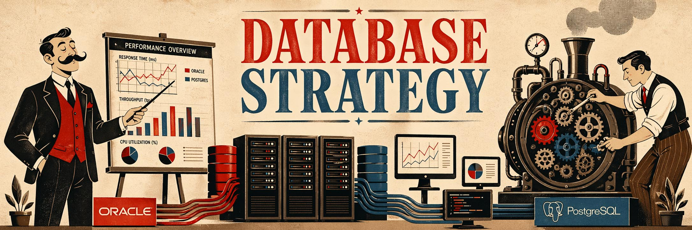

Database, architettura e performance come leva strategica per il business moderno.
È comprensione profonda dei piani di esecuzione.
È controllo dei privilegi e sicurezza dei dati.
È progettazione dei dati orientata agli obiettivi aziendali.
È performance che regge quando il carico cresce.
I database sono il cuore operativo dell'ecosistema digitale di ogni azienda. Supportano processi critici, abilitano decisioni basate sui dati e determinano velocità ed efficienza operativa.
Dentro il Motore è lo spazio in cui analizzo ciò che accade sotto il cofano di PostgreSQL, Oracle e MySQL: performance tuning, sicurezza, architettura e scelte tecniche applicabili in ambienti reali.
Perché nel mondo data-driven di oggi i database non sono semplici componenti software. Sono asset strategici che influenzano competitività, affidabilità e crescita sostenibile.